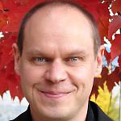

Speaker: Dr. Heinz H. Bauschke
Title: An invitation to projection methods
Abstract: [link]
Time: TBA
Location: TBA
Short Biography:

Heinz H. Bauschke is a Professor of Mathematics at the University of
British Columbia, Kelowna and a Canada Research Chair (Tier 2) in Convex
Analysis and Optimization.
He was born in Frankfurt, where he received his "Diplom-Mathematiker (mit Auszeichnung)" from Goethe Universität in 1990. He defended his PhD
thesis in Mathematics at Simon Fraser University in 1996, and was awarded
the Governor General's Gold Medal for his graduate work. After an NSERC
Postdoctoral Fellowship spent at the University of Waterloo, at the Pennsylvania
State University, and at the University of California at Santa Barbara,
Dr. Bauschke became College Professor at Okanagan University College in 1998.
He was also Principal Researcher for Workfire and Packeteer, where his work
on JPEG image compression led to a U.S. patent. He joined the University of
Guelph in 2001, and he returned to Kelowna in 2005, when Okanagan University
College turned into the University of British Columbia, Okanagan campus
in Kelowna (UBCO).
Dr. Bauschke has authored or co-authored more than 80 papers in Analysis
and Optimization. Jointly with Dr. Patrick Combettes, he has just completed
and published the 450+ pages monograph Convex Analysis and Monotone Operator Theory in Hilbert Spaces with Springer Verlag. He has also co-edited the
book Fixed-Point Algorithms for Inverse Problems in Science and Enginnering,
which appeared in 2011 in the Springer series Optimization and Its Application.
His work has been cited 945 times by 386 authors. In 2009, he became UBCO's First Researcher of the Year.
This short biography can be downloaded from here.
Speaker: Dr. Tim Swartz
Title: TBA
Abstract: TBA
Time: TBA
Location: TBA
Short Biography:
 Tim Swartz is Full Professor in the Department of Statistics and Actuarial Science at Simon Fraser
University. He completed his PhD and MSc in Statistics at the University of Toronto and his BMath
at the University of Waterloo. He is the author of over 60 peer-reviewed publications and two books.
His interests include Bayesian methods and applications, statistical inference and statistics in sport.
In his spare time, he likes to watch almost every sport imaginable; occasionally he plays some of these
sports.
Tim Swartz is Full Professor in the Department of Statistics and Actuarial Science at Simon Fraser
University. He completed his PhD and MSc in Statistics at the University of Toronto and his BMath
at the University of Waterloo. He is the author of over 60 peer-reviewed publications and two books.
His interests include Bayesian methods and applications, statistical inference and statistics in sport.
In his spare time, he likes to watch almost every sport imaginable; occasionally he plays some of these
sports.
This short biography can be downloaded from here.